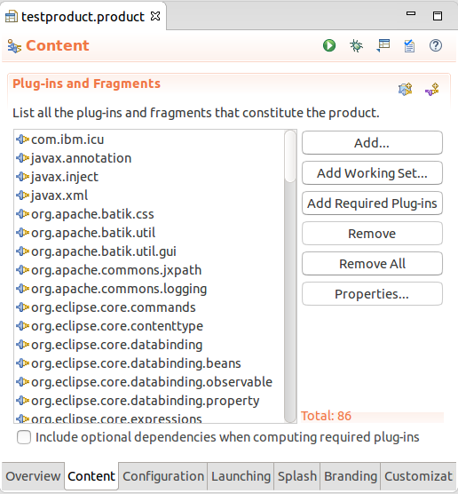
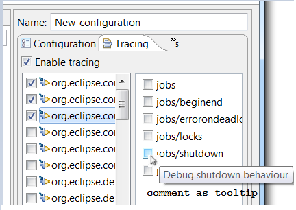
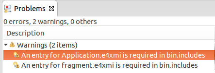
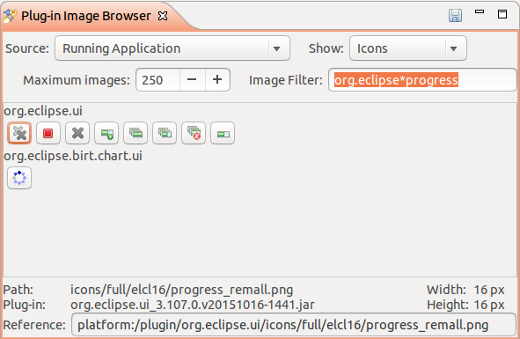
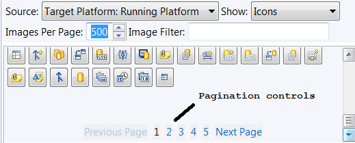
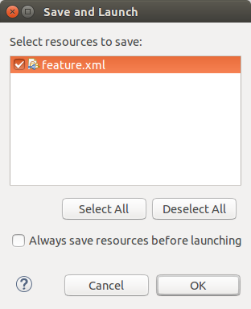
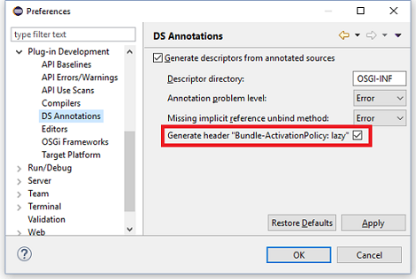
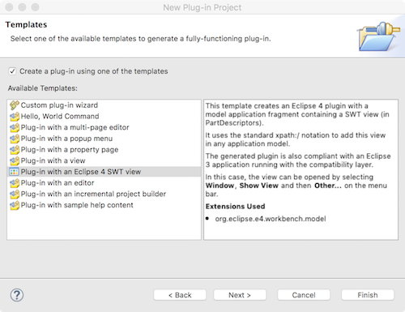
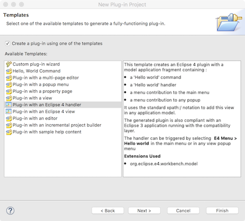

Dialogs, Editors, and Views


The information gets extracted from comments in the declaring bundle's .options file.
org.eclipse.e4.core.services as package dependency,
you can type in services instead of *services.
Use the new ImageFilter field to provide the search criteria (? = any character, * = any string) to find the icons with matching path or name.



OSGi Declarative Services
When enabled, PDE automatically generates and updates Declarative Services component descriptor files from appropriately annotated Java source. This is done without requiring any additional builder to be configured in your project.
When you annotate your component implementation classes with @Component, and any
reference bind methods with @Reference, PDE will validate your annotations
and generate the corresponding component descriptor files. Any errors discovered during validation
are highlighted and reported.

In addition, PDE will also maintain the project's MANIFEST.MF and build.properties file -- generated component descriptor files are automatically added to the manifest and included in the build.
To enable this feature, go to Preferences or Project Properties > Plug-in Development > DS Annotations and check Generate descriptors from annotated sources.
Bundle-ActivationPolicy: lazy header is necessary when starting an Eclipse application that uses the Equinox launcher.
Otherwise, the bundle that provides the declarative service will not be started automatically and therefore the service won't be available.
In a plain OSGi environment, this header is not necessary and might not have any effect. Therefore, it can be configured via preferences
whether the header should be generated or not.

Instead of creating a Component Definition file for each component class and adding it to the manifest and build.properties, the wizard creates component classes annotated with the appropriate DS annotations, which are then used by PDE to automatically generate the corresponding component descriptor files.
Wizards
To get this template, create a new plug-in project and answer 'no' to the question: Would you like to create a Rich Client Application?
Then, the 'Plug-in with an Eclipse 4 SWT View' template will be proposed in the list:

The generated plug-in will contain a model fragment with a sample E4 view that:
- manages the single and the multiple selection using the injection mechanism
- is added to any E3 compat or pure E4 application thanks to the 'xpath:/' notation
- is present in the Window > Show view dialog
To get this template, create a new plug-in project and answer 'no' to the question: Would you like to create a Rich Client Application?
Then, the 'Plug-in with an Eclipse 4 Handler' template will be proposed in the list:

The generated plug-in will contain a model fragment with a sample E4 hello world command that appears:
- in the 'E4 Handler' main menu
- in the 'E4 Handler' submenu in any popup menu